Recipes
Hello fellow Texans! We have various amounts of recipes that are nutritious covering all aspects of the day. We have recipes for breakfeast, lunch, dinner, and last but not least snacks.
Breakfast
Lunch
Dinner
Snacks
________________
Breakfast
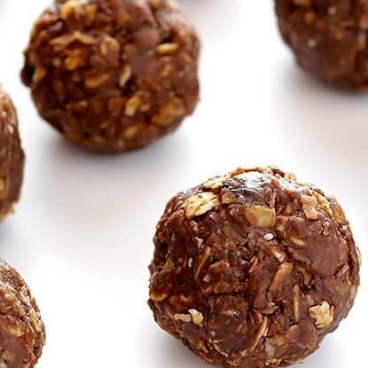
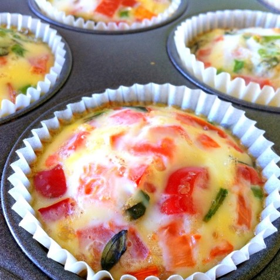
Peanut Butter Bake Energy Bites
High Protein Breakfast Egg Muffins
Breakfast Cookies
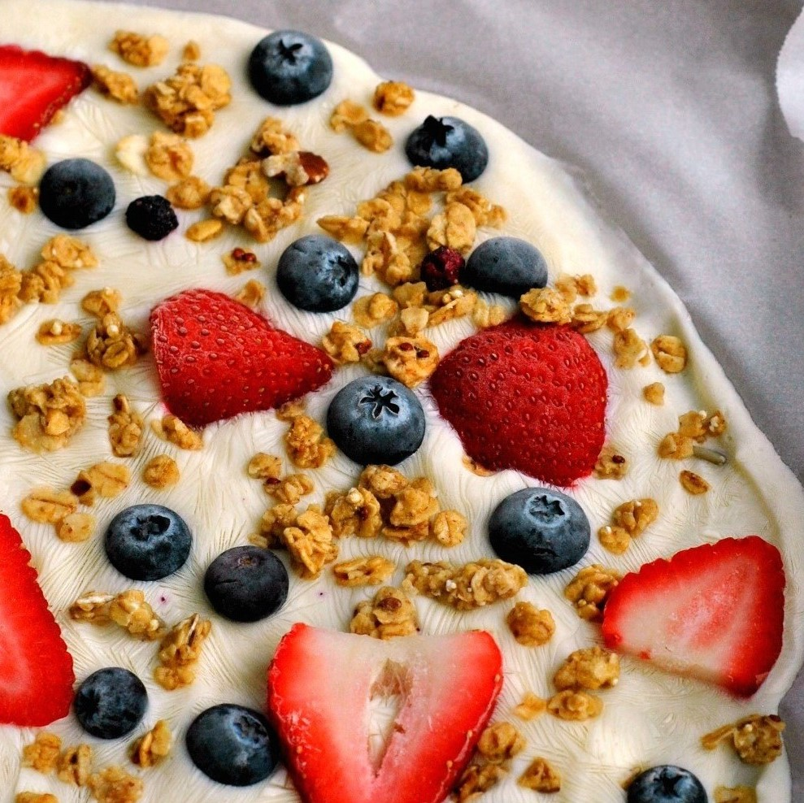
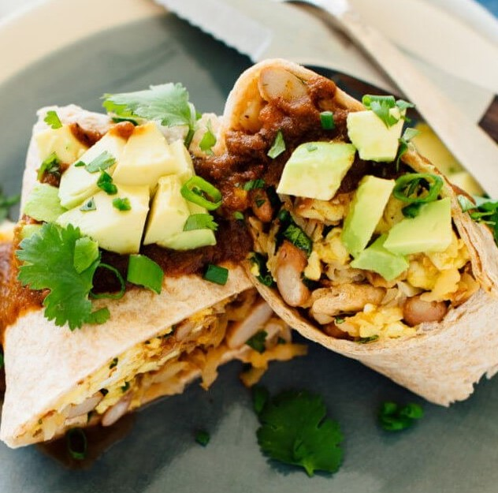
Greek Yogurt Breakfast Bark
Vegetarian Breakfast Burritos
Freezer Breakfast Burritos
Crustless Mini Quiches
DIY Smoothie Packs
DIY Toast Art
________________
Lunch
Chicken and Spinach Quesadillas
Chimichurri Noodle Bowls
Sweet Potato Tacos with Lime Crema
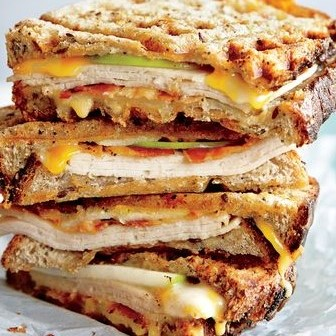
Spaghetti Squash Shrimp Scampi
Waffle Iron Turkey Melt Panini
Grilled Chicken Salad with Blueberry Vinaigrette
Waldorf Turkey Pitas
Honey Sesame Chicken Lunch Bowls
Broccoli Melts
________________
Dinner
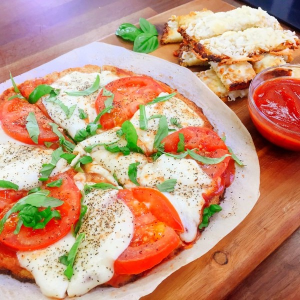
Grilled Shrimp in Lettuce Leaves with Serrano-Mint Sauce
Cauliflower margherita pizza
Spinach Quesadillas
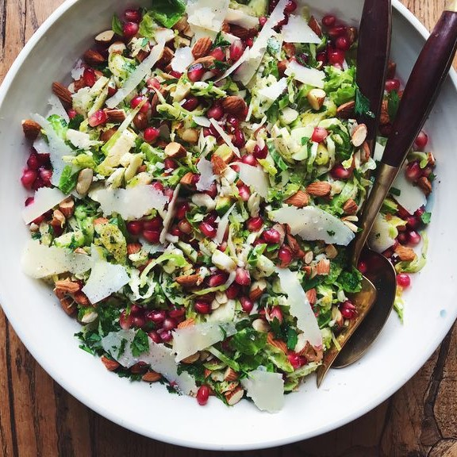
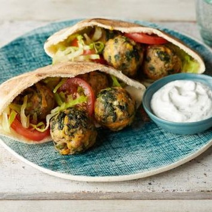
Parmesan Brussels Sprouts Salad
No-Chop Skillet Chili
Eat-Your-Veggies Mediterranean Meatball
Caribbean Jerk Chicken with Pineapple-Coconut Rice
Apple Juice Chicken
Spicy Southern Black Bean Chili
________________
Snacks
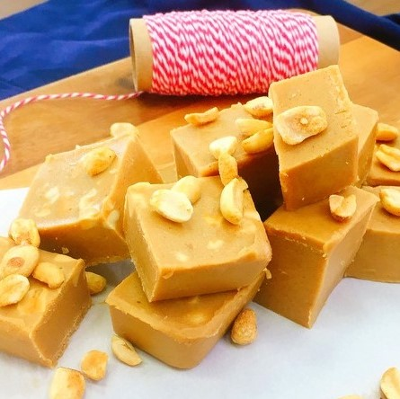
Peanut Butter Honey Fudge
Fruity Frozen Cubes
Watermelon Slushy
Oatmeal Blueberry Muffins
Baked Broccoli Tots
Homemade KIND Bars
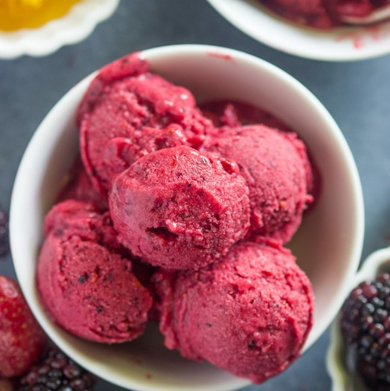
5-Minute Berry Frozen Yogurt
Peanut Butter Banana Smoothie
Oven-Dried Strawberries


 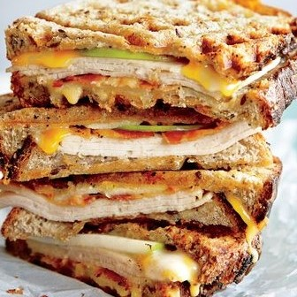
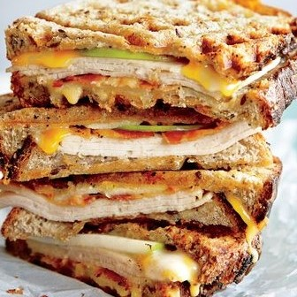


 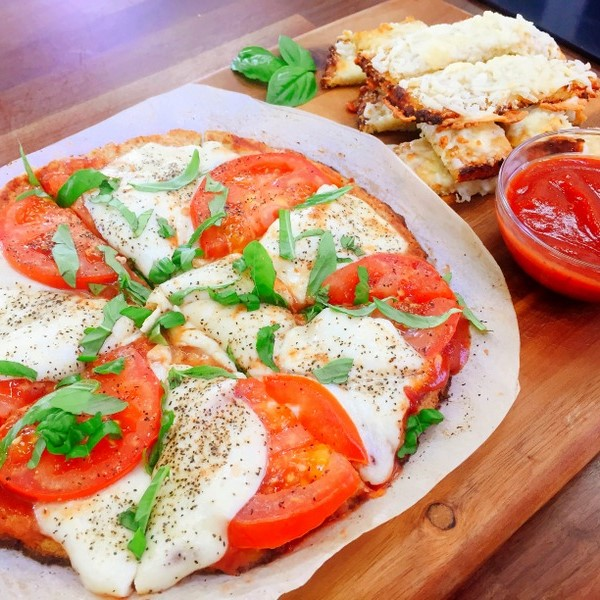
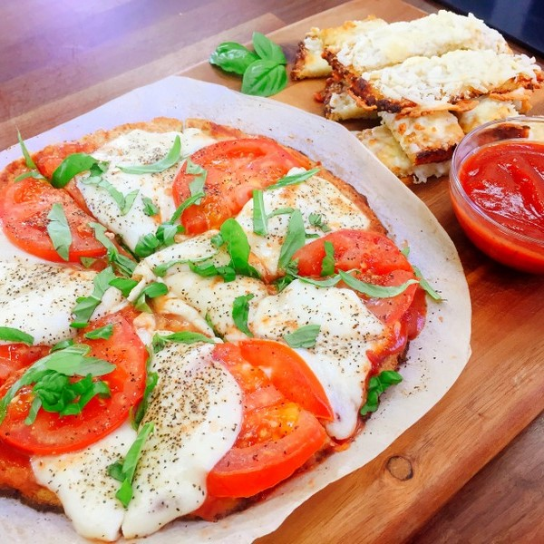

 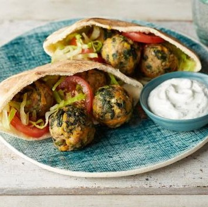
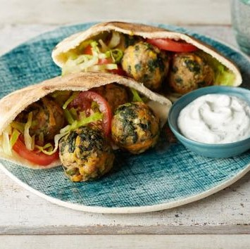